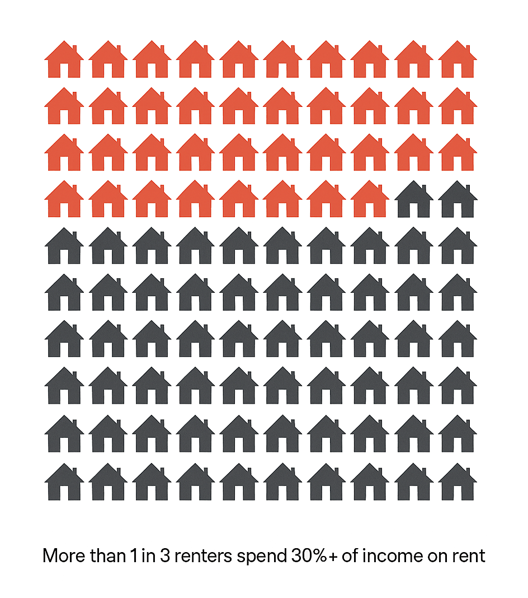

Commentary from the CivHub team on policy transparency, civic design, platform ethics, and the future of digital governance. Short-form and long-form entries posted in reverse chronological order.
Published April 11, 2025
According to the 2023 American Housing Survey, nearly 37% of U.S. renters are rent-burdened — meaning they spend over 30% of their income on housing costs. For millions, that threshold isn’t just a number — it’s the line between stability and crisis. Rent burden doesn’t only reflect private markets. It reveals where public infrastructure is falling short: in transportation access, zoning policy, wage adequacy, and social safety nets. Housing costs are a civic signal — and right now, they’re flashing red.
One possible fix? A rent-burden early warning system: a public dashboard that tracks where rent costs rise faster than local wages, triggering increased housing vouchers, zoning flexibility, or transit support. Some places have started exploring these tools — including California, and the Urban Institute's Housing Indicators — but most residents never know they exist.
 Source: U.S. Census Bureau, American Housing Survey (2023)Published April 10, 2025
A 2023 Pew Research Center study found that 38% of webpages that existed in 2013 were no longer accessible a decade later. And among U.S. government domains, 21% of pages contained at least one broken link — often to key documents or data sources. This isn't just an inconvenience — it's a slow erosion of public memory and access. When critical information disappears from the public web, it becomes harder to hold institutions accountable, or even understand how decisions were made. Digital decay is a policy problem in disguise.
Source: Pew Research Center, 2023Published April 2, 2025
We don’t just need better data — we need better narratives. When we can see clearly, we can act collectively. Transparency isn’t just an audit mechanism, but a foundation for democratic imagination.
Read full essay →